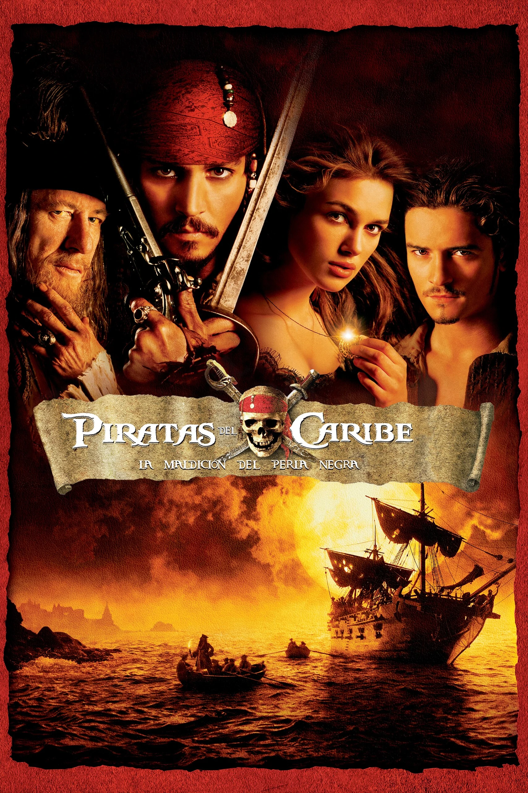
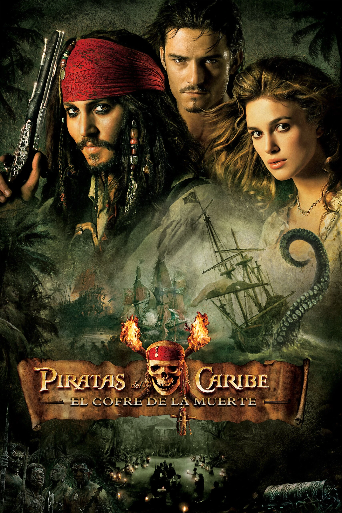
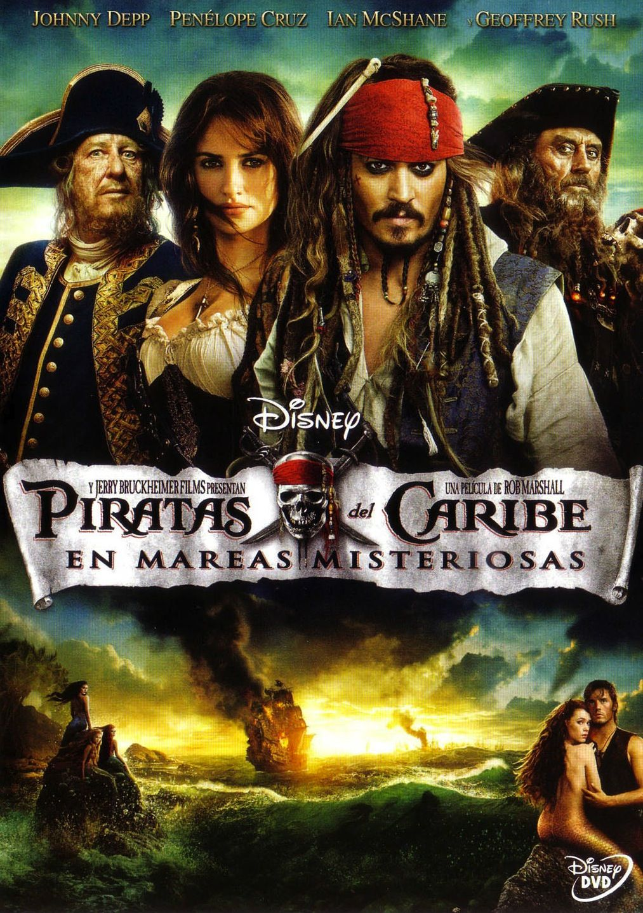
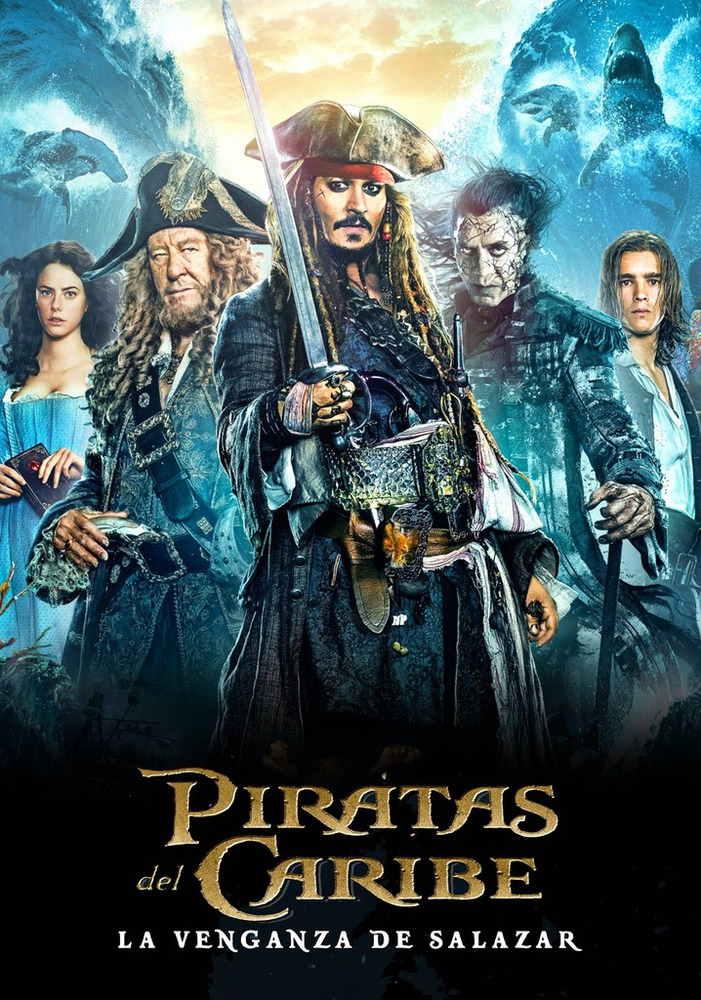

Piratas del Caribe es el título de una franquicia cinematográfica de aventura fantástica y piratas, producida por Jerry Bruckheimer, basada en la atracción del mismo nombre del Parque Temático de Walt Disney. La saga Piratas del Caribe cuenta con cinco películas estrenadas y una sexta en producción.
Esta saga de películas se basa libremente en mitos y leyendas de los mares, como el pirata Davy Jones y su tripulación fantasmal a bordo de El holandés errante, la mitología griega que incluye dioses como Poseidón, la ninfa Calipso, seres como el Kraken y las sirenas, brujería y la vida de los piratas de la época. Retrata libremente al Imperio británico, la Compañía de las Indias Orientales, el Imperio español y su relación con los piratas y corsarios.
La serie comenzó con su primer lanzamiento en la pantalla grande en 2003 con Pirates of the Caribbean: The Curse of the Black Pearl, que recibió críticas positivas de los críticos y recaudó 654 millones de dólares en todo el mundo, convirtiéndose en un éxito total. Después de la primera película, Walt Disney Pictures reveló que preparaba una trilogía. La segunda película de la franquicia, bajo el título de Pirates of the Caribbean: Dead Man's Chest, fue lanzada tres años después. La secuela resultó exitosa, rompiendo récords de taquilla en todo el mundo el día de su estreno. El cofre del hombre muerto, como fue llamada en español, terminó siendo la película más taquillera de 2006, tras ganar casi 1.100 millones de dólares a nivel mundial. La tercera película de la serie, con el subtítulo En el fin del mundo, siguió en 2007 rompiendo récords el día de su estreno. Disney lanzó una cuarta película, Pirates of the Caribbean: On Stranger Tides, en 2011 en 2D convencional, Digital 3-D e IMAX 3D. On Stranger Tides logró también recaudar más de mil millones de dólares,1 convirtiéndose en la segunda película de la franquicia en lograrlo y sólo la octava película en la historia en lograr este récord.
|  |  | |
|  |  |
La trama gira en torno a Elizabeth Swann (Keira Knightley), una joven aristócrata que además es hija del gobernador de la ciudad caribeña de Port Royal, Weatherby Swann, quien trata de casarla con el Capitán James Norrington. Sin embargo, ella está enamorada en secreto de su amigo de la infancia, el herrero Will Turner, quien no permitirá que Norrington la despose.
En el transcurso, unos piratas atacan la colonia en la que vive y secuestran a la joven con el propósito de quitarle un medallón que les ayudará a romper con la eterna maldición a la que han sido condenados por robar un tesoro maldito. Desesperado, Turner acude al Capitán Jack Sparrow, pirata al que desprecia pero que le será pieza clave para encontrar el barco donde se encuentra la damisela.
Sin embargo, tanto Sparrow como Turner se enfrentarán durante su travesía oceánica a la enorme tripulación maldita del que curiosamente fuera en un pasado el barco capitaneado por Sparrow. Esta tripulación sufre la condena de convertirse en esqueletos insensibles cuando la luz de la luna los toca.
El cofre del hombre muerto o El cofre de la muerte, en España e Hispanoamérica, respectivamente, es la segunda parte de la pentalogia fílmica. El Capitán Jack Sparrow (Johnny Depp) está de regreso con su espíritu rebelde y una deuda de sangre que deberá pagar: él debe su alma al legendario Capitán Davy Jones (Bill Nighy), el amo fantasmal de las profundidades del océano.2
En esta ocasión, Will Turner (Orlando Bloom), Elizabeth Swann (Keira Knightley) y el ex Comodoro James Norrington (Jack Davenport) navegan a un turbulento torbellino de desventuras, incitados por Jack y su carrera por salvarse de una condena eterna en los dominios de Jones, consiguiendo el legendario Cofre del Hombre Muerto.
En esta entrega, Will (Orlando Bloom) y Elizabeth (Keira Knightley) han decidido hacer lo imposible por rescatar a Jack Sparrow (Johnny Depp), dado que Elizabeth lo deja a la merced del Kraken, y, para ello se une en alianza con Barbossa y su tripulación, quienes emprenden una gran travesía con destino al fin del mundo.
Mientras tanto, El Holandés Errante es controlado por la Compañía Británica de las Indias Orientales.
Durante su travesía, Barbossa, Turner y Swann llegan a su destino: Singapur, donde se encuentran con el misterioso pirata chino Sao Feng, uno de los nueve señores de la piratería. Deben reunir a la hermandad pirata para así liberar a Calypso, una diosa atrapada en el cuerpo mortal de Tía Dalma, para que dirija los océanos y mantenga el orden.
Más allá de los confines de la Tierra, cada uno de los piratas deberá elegir a qué bando pertenecer para enfrentarse en una titánica batalla final y vencer a Davy Jones y su tripulación - ya que no solo sus vidas y sus destinos están en verdadero peligro, sino que además está en riesgo la forma de vida de cualquier bucanero, sinónimo de libertad.
El Capitán Jack Sparrow se cruza con una mujer de su pasado, llamada Angélica (Penélope Cruz) (hija del temido en todos los tiempos Barbanegra, el más malvado de todos los piratas juntos), de la que no está seguro si siente amor por ella o si solo es una estafadora despiadada que le está utilizando para encontrar la legendaria Fuente de la Juventud e intentar salvar de la muerte a su querido padre. Cuando ella le obliga a abordar el Queen Anne's Revenge (Venganza de la reina Ana), capitaneado por Barbanegra (Ian McShane), mediante mentiras y golpes, Jack se encontrará en una graciosa aventura en la que no sabe a quién temer más: al temible Barbanegra o a la mujer de su pasado.
Jack se unirá con Barbossa para poder obtener dos de los elementos necesarios para el ritual de la Fuente de la Juventud y por otra parte con Barbanegra que, junto con su tripulación macabra, se apoderará de una sirena que se enamora de un predicador.
En los últimos minutos de la cinta, Jack abandona a Angélica en una isla del Caribe, esperando ser salvada por algún comerciante puesto que la isla es una vía de comercio.
En esta obra se aprecia el infortunio de Barbanegra y el amor de Jack hacia Angélica, y no se puede pasar por alto el encuentro de Jack con su Perla Negra en miniatura gracias al Contramaestre Gibbs, quien también recupera una flota completa; por su parte, Barbossa traiciona a la Corona Inglesa y toma posesión del Venganza de la Reina Ana. La fuente de la Juventud se ve destruida a manos de los españoles, que quieren dar fin a rituales paganos. Todo lo anterior parece indicar que en una posible siguiente aparición en la pantalla grande del Capitán Jack Sparrow, éste y su tripulación darán "vida" de nuevo al Perla Negra y a la flota recuperada por Gibbs.
Esta última película fue estrenada el 11 de mayo de 2017 en Shanghái. La aventura encuentra al Capitán Jack Sparrow pasando por una mala racha, con la sensación de que los vientos de la mala fortuna soplan fuertemente en su dirección cuando los letales marineros fantasmas, liderados por el aterrador Capitán Armando Salazar (Javier Bardem), se escapan del Triángulo del Diablo empeñados en matar a todos los piratas del mar, y en particular a Jack. La única esperanza que tiene Jack de sobrevivir yace en el legendario Tridente de Poseidón, pero para encontrarlo debe formar una incómoda alianza con Carina Smyth (Kaya Scodelario), una brillante y hermosa astrónoma, y con Henry Turner (Brenton Thwaites), un joven y decidido marinero de la Marina Real, hijo de Will Turner (Orlando Bloom) y Elizabeth Swann (Keira Knightley). Al timón del Dying Gull, su lastimoso barquito gastado, el Capitán Jack procura no solo revertir su reciente aluvión de mala fortuna, sino también salvar su vida del enemigo más formidable y maligno al que se haya enfrentado. Finalmente, Will y Elizabeth se reencuentran una vez más y continúan con su vida amorosa de nuevo.
Cuándo empezará la producción de la película todavía es una incógnita, aunque ciertos medios de comunicación aseguran que la película contará con Joachim Rønning dirigiendo mientras que Ted Elliott y Craig Mazin serán los guionistas, pero por el momento no se confirma la presencia de Johnny Depp en el papel de Jack Sparrow.